打开平台默认进入本页。四路 MJPEG 实时流（约 20 帧/秒）；CH-1 上的绿色虚线框是电子围栏（入侵触发 3 秒内变红加粗显示「入侵中」）；左侧为四类检测状态卡；底部为今日计数与计数清零按钮（仅本页显示，需管理员）；顶栏右侧「全 屏」按钮进入全屏。顶栏徽标正常时显示 YOLOv8 + ByteTrack，视频链路异常时换成诊断文案（视频慢 N 帧/重连中/代理不可达）。
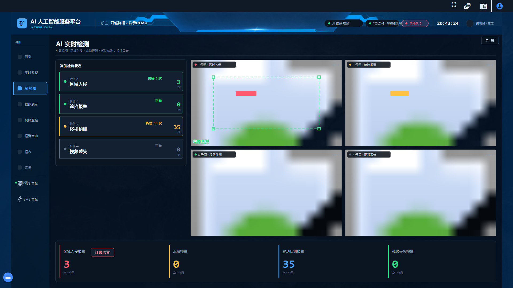
四类告警计数卡、最新报警、系统状态与报警图片预览入口。导航高亮停在「首页」。
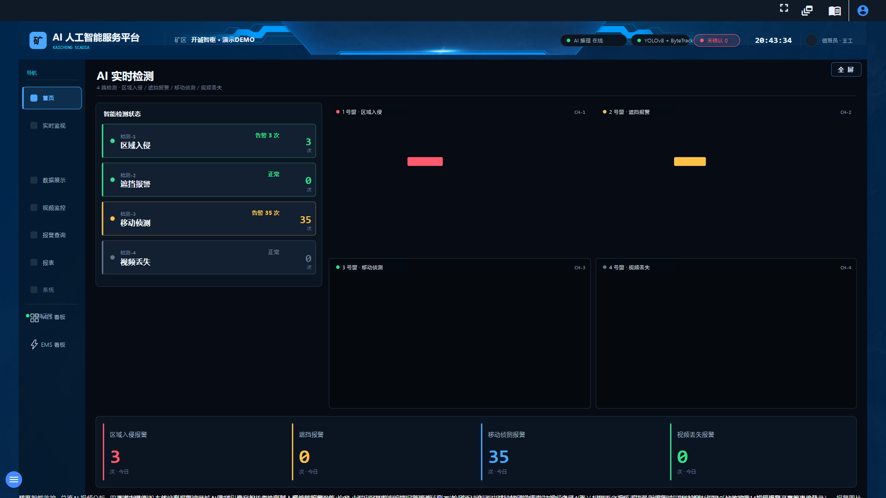
全部为真数据：各类告警真实次数（读静态计数文件）、近 7 日真实区间、真实占比。
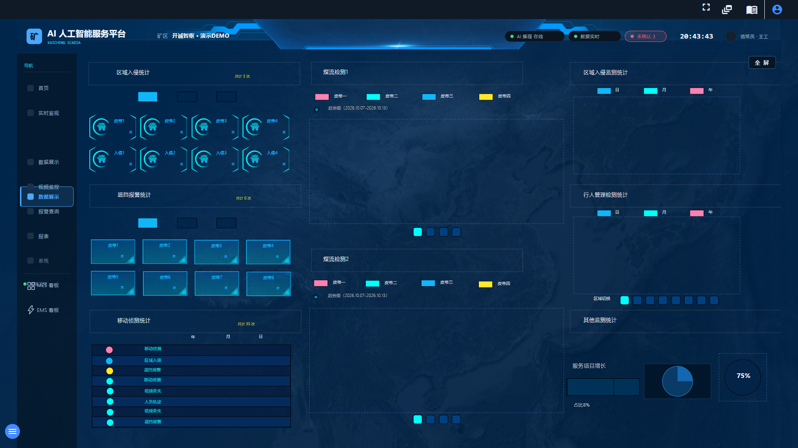
单机位实时流大窗（自动接入 MJPEG，叠加围栏与人员框），右侧为最新 3 条报警卡（时间/通道/类型/描述，10 秒刷新）。
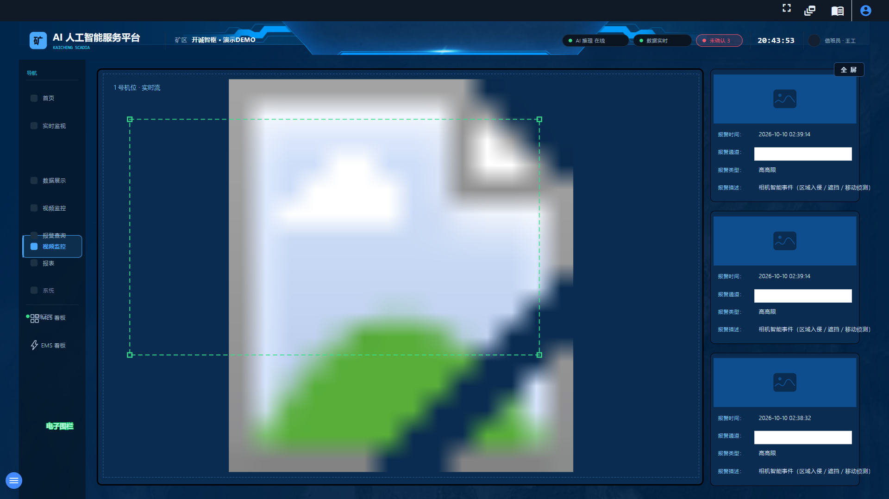
当前库与历史库（数千条）联查；按时间（今日/一周/全部）与状态（未确认/已确认）筛选；每行可就地确认、查看抓拍图。默认筛选为「全部时间 + 未确认」。
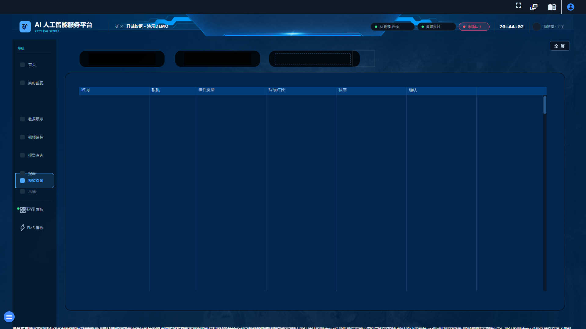
点「全 屏」后：浏览器地址栏/标签栏、系统任务栏、平台图标条全部退场，画面 1:1 铺满整屏（16:9 屏零留边）。退出三条路：画面上的「退出全屏」按钮、Esc、F11。
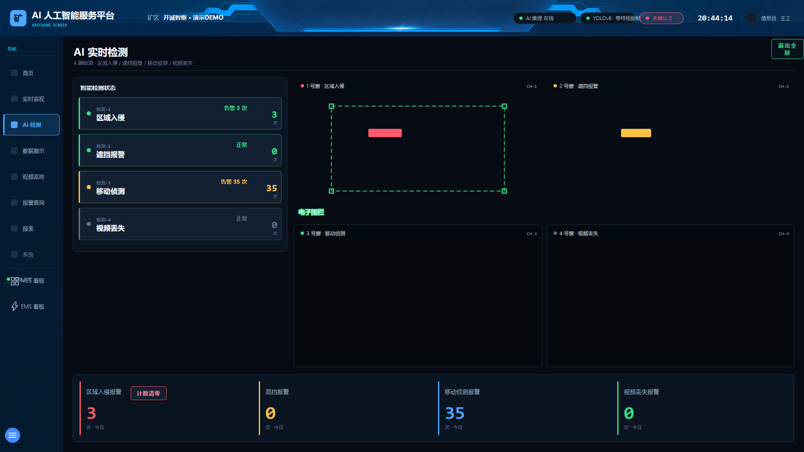
多窗布局（1x1 至 4x4、1+5）；先点窗格再从右侧资源区指派相机。右侧操作盘：变倍/聚焦为步进控制——单击走一小步、按住连续、松开即停；速度 1-8；预置点。方向盘与镜头按相机能力自动适配（无云台则不显示方向盘）。
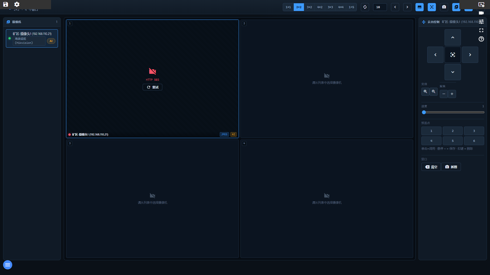
演示导航「MES 看板」直达。
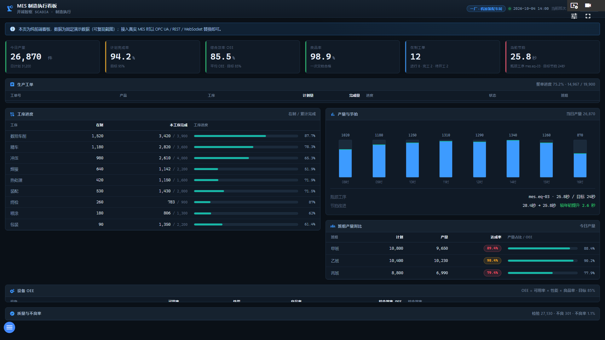
演示导航「EMS 看板」直达。
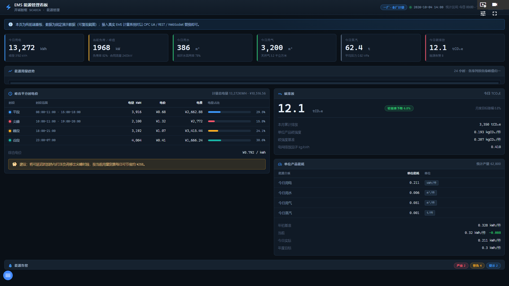
平台报表配置页。当前工程尚未定义日报（待办 P4），定义后即可在页面生成/下载 PDF 日报。
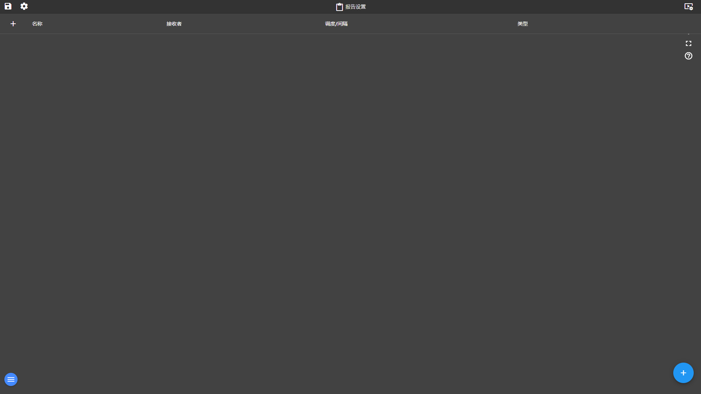
用户/群组/起始视图管理。游客身份打开会因无权限而空，需 admin 登录。
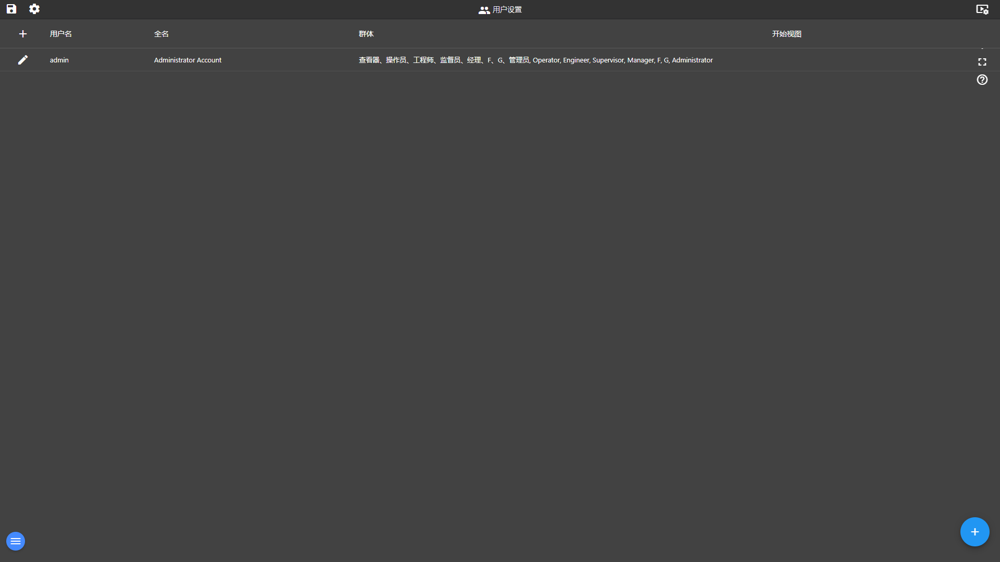
工程二次开发入口：视图 SVG 编辑、设备/脚本/报警配置。MES/EMS 等全部平台能力在开发系统中照常可用。
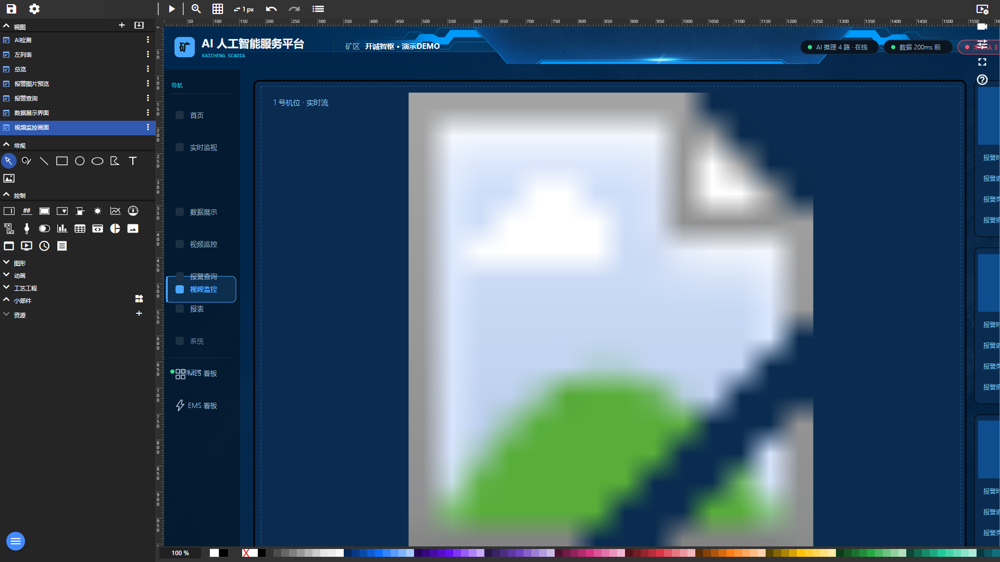